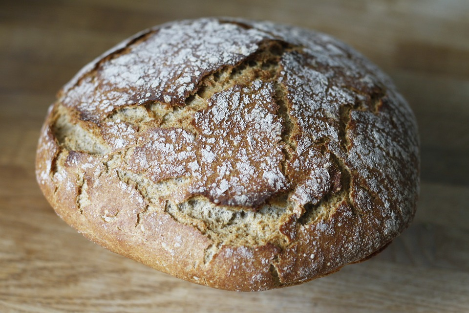

PAN CASERO

Descripciòn
La elaboración del pan casero comienza cuando se activa la levadura en agua tibia con azúcar hasta que espuma.
Luego,
se mezcla con harina y sal,se agrega aceite y más agua tibia para formar una masa que se amasa hasta
lograr cohesión y elasticidad.
Ingredientes
- 1 kg de harina
- 1 sobre de levadura seca rápida (10 gramos), que reduce tiempo de fermentación.
- 1 cucharada de sal.
- 1 cucharada de azúcar.
- 2 cucharadas de aceite.
- Agua tibia cantidad necesaria (aproximadamente 500 ml, ajustar según sea necesario).
Pasos
- En un bol grande, mezcla la harina con la sal.
- Disuelve el azúcar y la levadura seca rápida en un poco de agua tibia. Espera unos 5 minutos hasta que la
mezcla comience a espumar, indicando que la levadura está activa.
- Haz un hueco en el centro de la mezcla de harina y añade la mezcla de levadura espumosa, junto con las 2
cucharadas de aceite.
- Comienza a mezclar, agregando gradualmente el resto del agua tibia hasta formar una masa suave que no se
pegue a las manos. Es posible que no necesites usar toda el agua o que necesites un poco más, dependiendo de
la absorción de la harina.
- Amasa la masa sobre una superficie ligeramente enharinada durante unos 5 a 10 minutos, hasta que esté suave
y elástica.
- Coloca la masa en un bol ligeramente aceitado, cubre con un paño húmedo y deja reposar en un lugar cálido
por aproximadamente 30 minutos, o hasta que haya duplicado su tamaño.
- Una vez que la masa ha crecido, divide y forma los panes según tu preferencia. Colócalos en una bandeja de
horno preparada.
- Deja reposar los panes formados por unos 10-15 minutos mientras precalientas el horno a una temperatura
media-alta (aproximadamente 220°C).
- Hornea por unos 20-25 minutos o hasta que los panes estén dorados y suenen huecos al golpearlos suavemente
en la base.